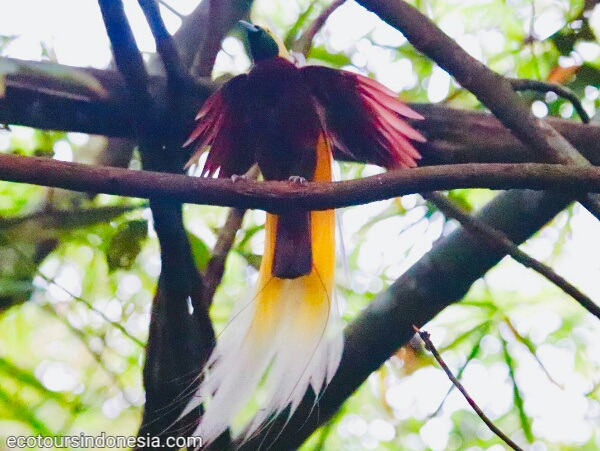

Bird Watching in Wondama
West Papua province in Indonesia is a very popular birding destination. Thousands of birdwatchers and wildlife photographers go there to explore its rainforest to see and photograph beautiful tropical birds of New Guinea. There are a lot of birding destinations in West Papua. One of them is Wondama regency.
a Male Lesser Birds of Paradise

Birds in Rainforest and coastal area of West Papua
The regency of Wondama has got a lot of birding sites. The forest area behind the regent's office in Rasiei is a nice place to start. Visitors can do general birding along an abandoned road to see Olive-crowned Flowerpecker, Olive-backed Sunbird, Black Sunbird, Helmetted Friarbird, Pinon Imperial Pigeon, Grey Crow, Yellow-faced Myna, Shining Flycatcher, Yellow-billed Kingfisher, and etc. The abandoned unpaved road has not been used for several years because there is new paved road now. Visitors can enjoy birdingwalk all day long here. However, the best time to enjoy birding is in the mornings and in the afternoons.
Another important birding site in Wondama peninsula is Wandamui Hill. Overlooking the sea in Wondama Bay, visitors can stand or sit on the viewpoint structure to see the beautiful scenery of the bay and watch birds. The best time to enjoy birding here is in the morning. Birds that fly over this hill can easily be observed. They include Sulphur-crested Cockatoo, Eclectus Parrot, Brahminy Kite, Lesser Frigatebird often fly here. Rufous-bellied Kookaburra and Blyth's Hornbill like to sit on the branches of trees around this hill. Various kinds of tropical plants from small pitcher plant on the hills to barringtonia trees along the coast can be seen there.

Two imporant birding sites can be seen in the north and south of Wondama peninsula. Birds of Paradise that live in lowland and lower montane forest can be seen there. Some of them include King Bird of Paradise, Magnificent Riflebird, Glossy Manucode, and Lesser Bird of Paradise. Other birds such as Red-cheeked Parrot, Palm Cockatoo, Sulphur-crested Cockatoo, Golden Myna, Brown Cuckoo Dove, Wompoo Fruit Dove, Great Cuckoo Dove, Common Paradise Kingfisher.
Wildlife Watching Gear
In general, visitors who are very fond of birdwatching and wildlife watching know what they need to bring when they go to watch birds and other wild animals in the forest. Binoculars, spotting scopes and bridge cameras such as Nikon P900 or Canon SX70HS are typical wildlife watching gear that tourists can bring for theor birding holiday in Wondama regency.
Booking
If you are interested in taking a birding tour to Wondama regency and want me to organize your tour and guide you, please, contact me (Charles Roring) by email to: peace4wp@gmail.com or by whatsapp to: +6281332245180.